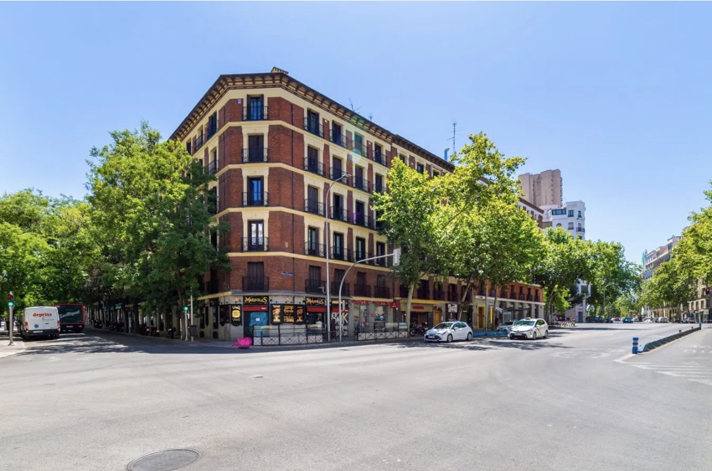
Arquitectura histórica, interiorismo contemporáneo y la mejor dirección de Madrid, reunidos en una vivienda lista para habitar desde el primer día.
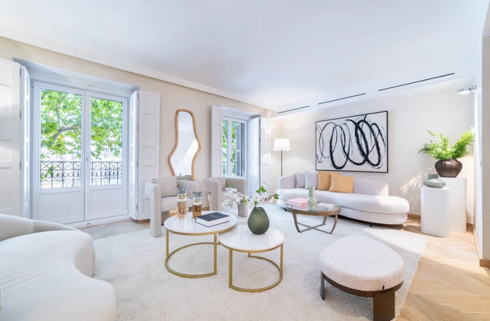
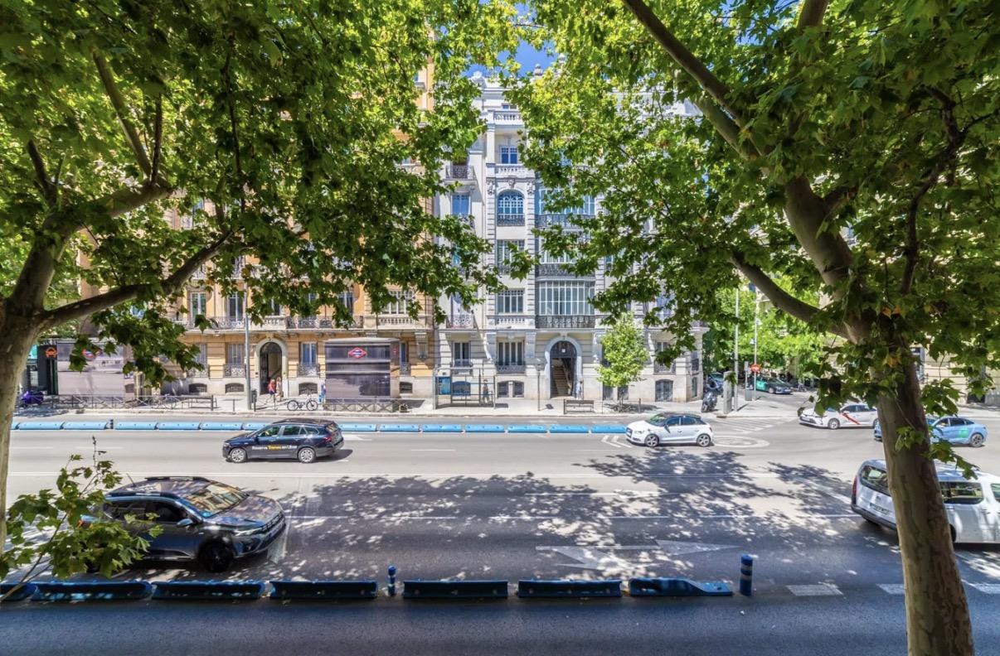
En la calle Príncipe de Vergara, la vivienda se asoma a un amplio bulevar de plátanos de sombra flanqueado por algunas de las fachadas más representativas de la arquitectura señorial madrileña. Desde los balcones, la ciudad se percibe filtrada por el verde.
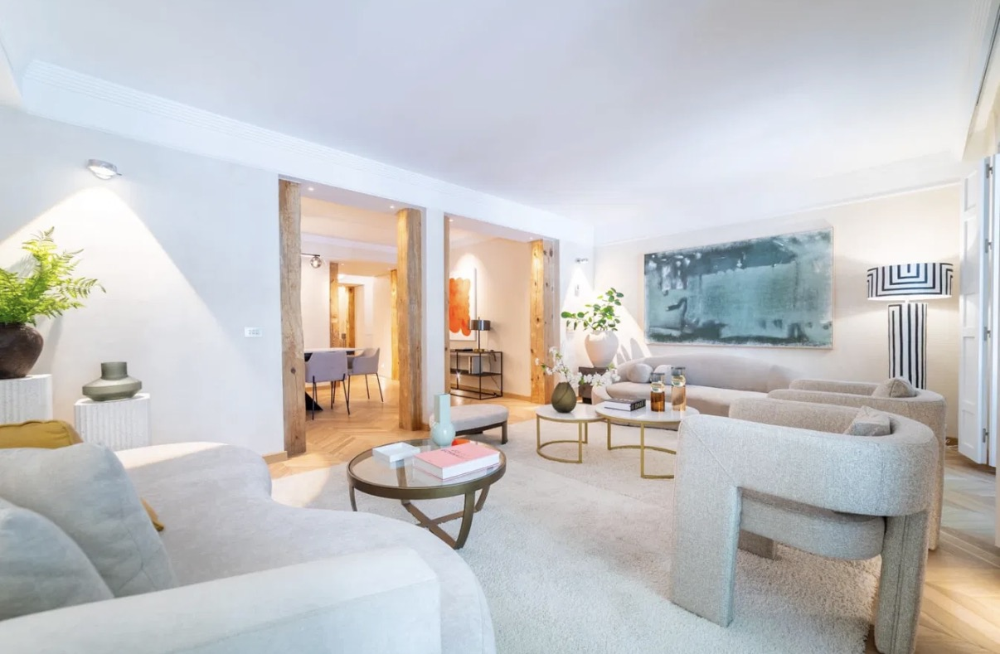
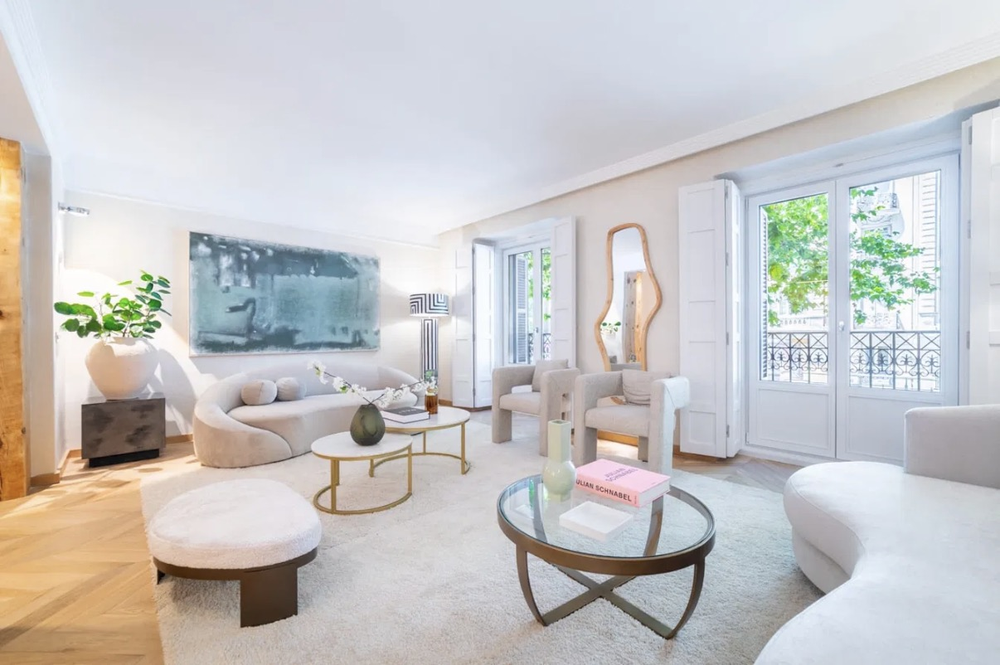
Un salón de gran formato pensado para recibir: varias zonas de estar conviven con holgura, bañadas por la cálida luz de tarde que entra por sus dos balcones a la calle. Las molduras perimetrales recuerdan el origen noble de la finca.
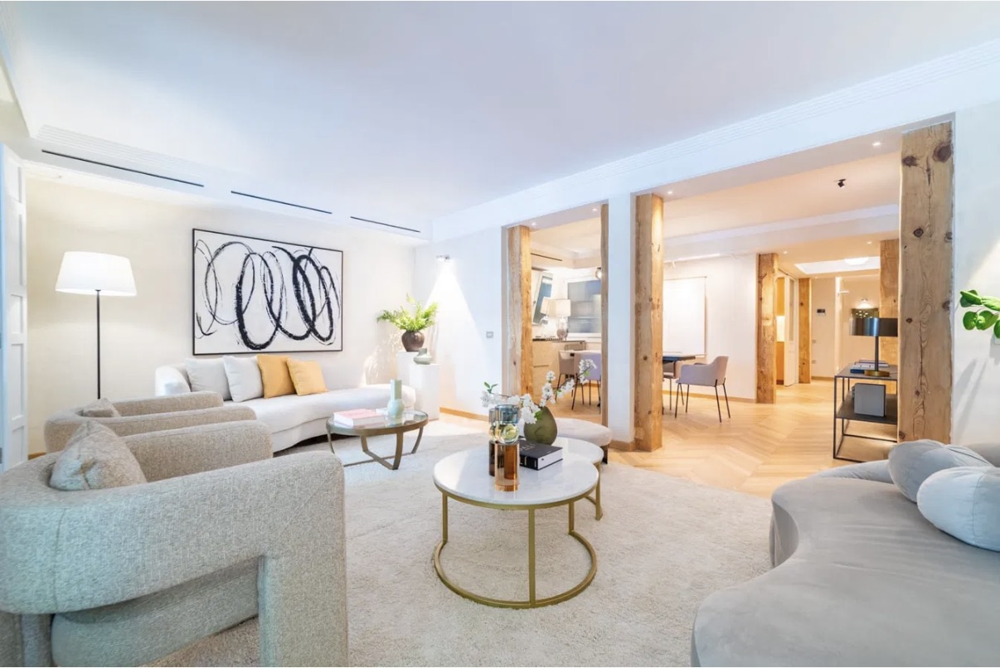
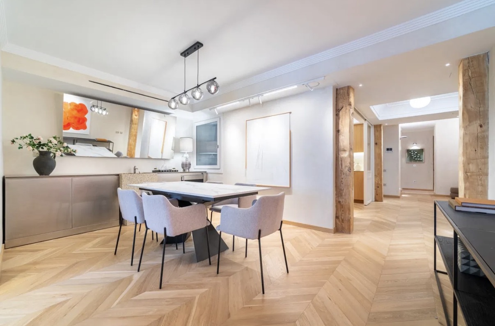
Los pies derechos originales de la finca se han recuperado y dejado vistos. Lejos de ocultarlos, el proyecto los convierte en el hilo conductor de una planta fluida que enlaza salón y comedor sin perder la definición de cada ambiente.
El resultado es un espacio con alma: la autenticidad de una estructura centenaria dialogando con un interiorismo depurado y actual.
Un cerramiento de vidrio con puertas correderas permite integrar la cocina en la vida social de la casa o independizarla por completo. Mobiliario en roble natural de suelo a techo, con líneas limpias y sin tiradores superfluos.
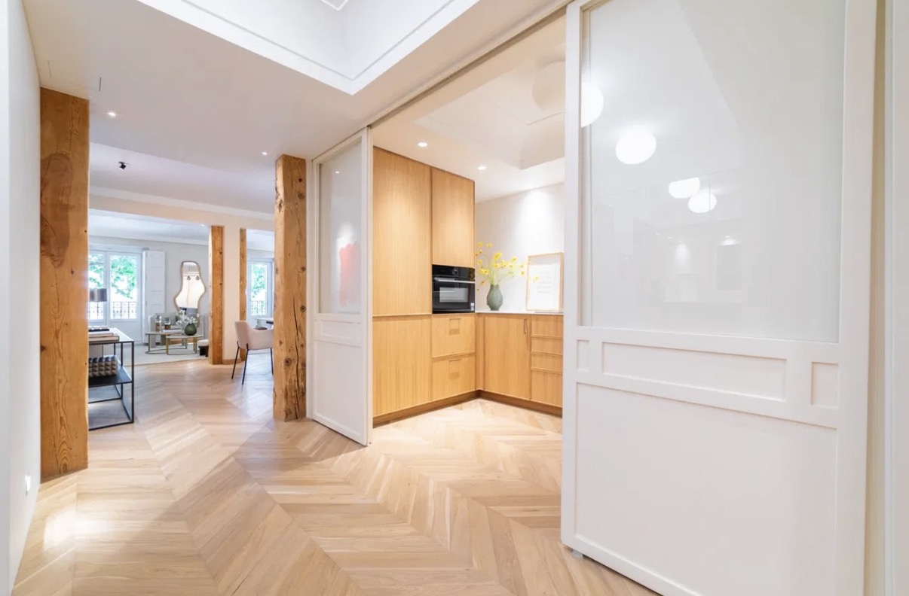
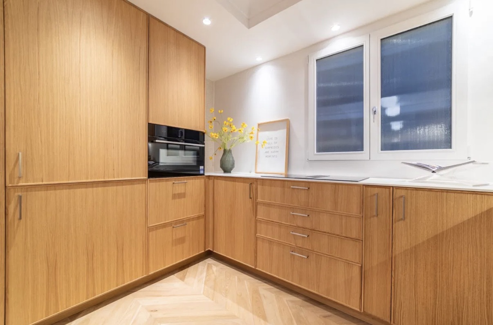
El recibidor marca el tono desde el primer paso: proporciones generosas, luz cálida y una galería de arte que acompaña el recorrido.
Un distribuidor ordenado separa con naturalidad la zona de día de la de noche, garantizando privacidad a los dormitorios.
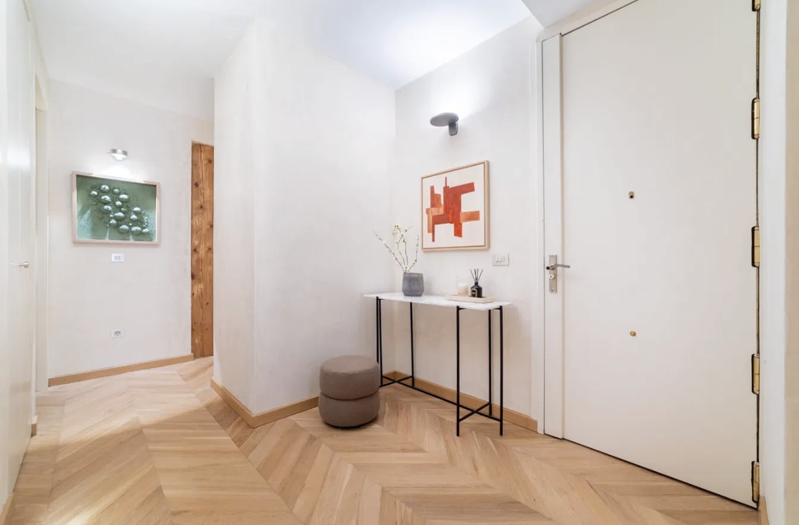
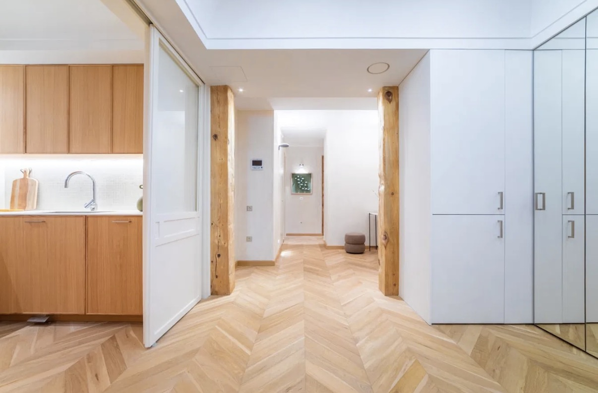
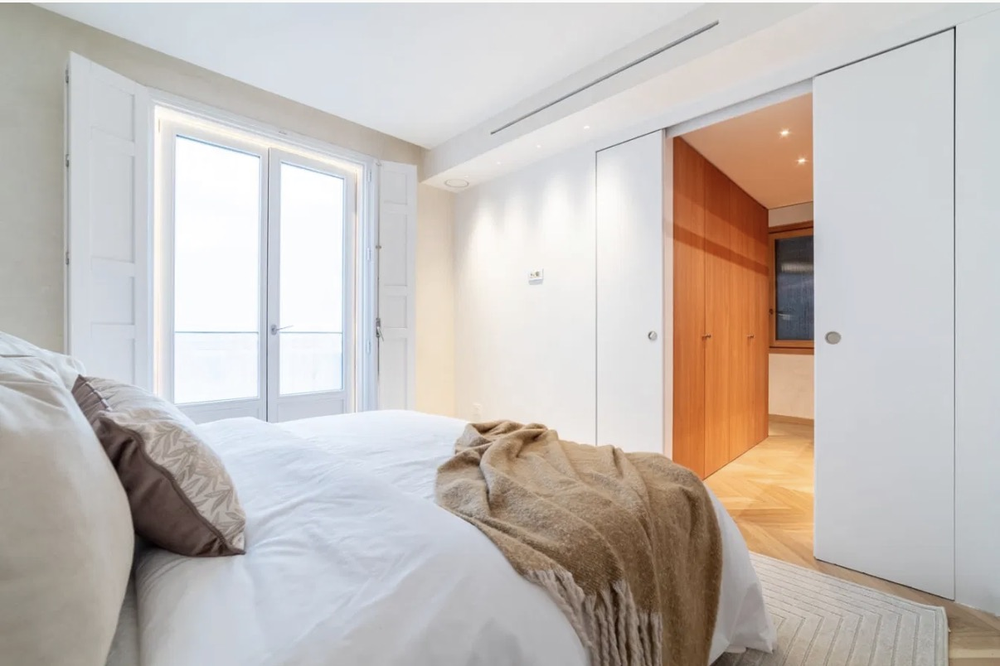
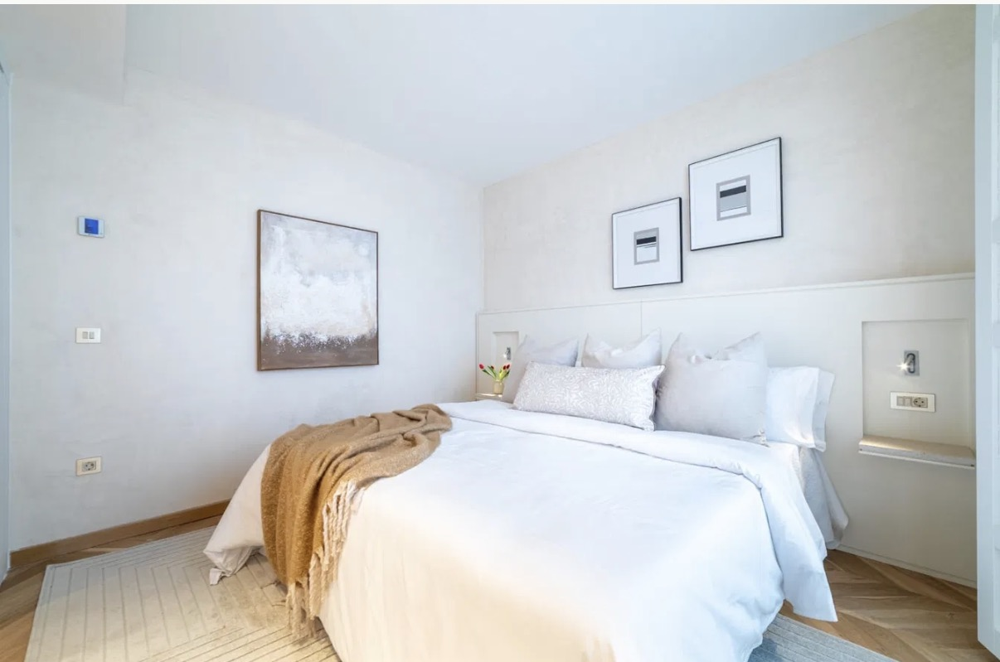
El dormitorio principal se concibe como un refugio: cabecero arquitectónico con mesillas integradas, balcón propio y, tras unas puertas correderas enrasadas en la pared, un vestidor independiente revestido en madera cálida.
Una pieza que eleva la vivienda al estándar que exige el comprador de alto nivel.
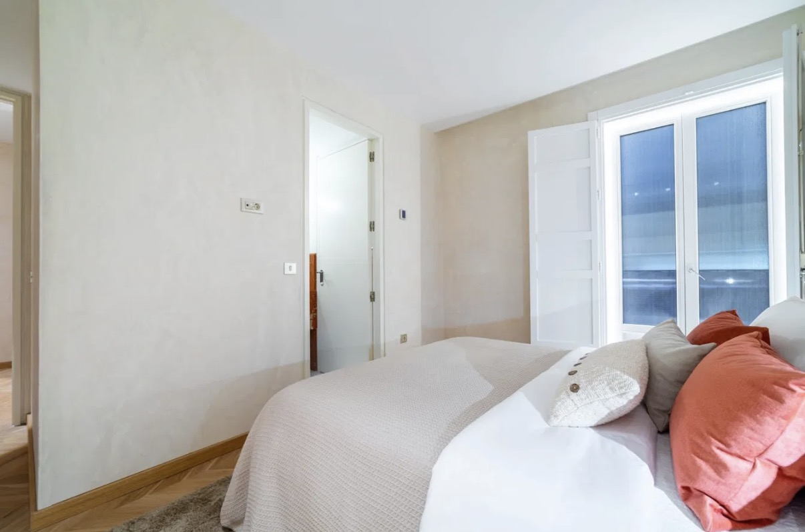
Ambos dormitorios cuentan con baño propio. El segundo mantiene la misma exigencia que la estancia principal: luz natural a través de balcón y un diseño atemporal pensado tanto para la familia como para invitados.
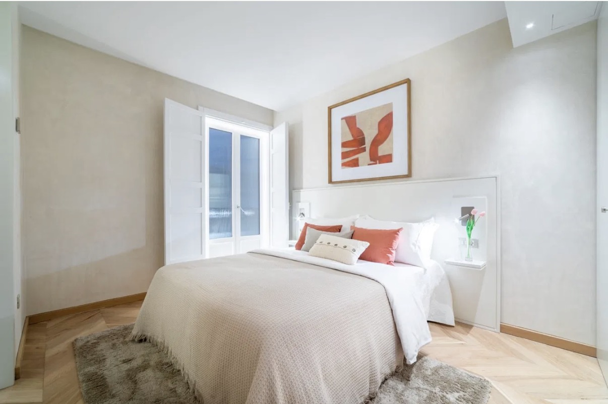
Tarima de roble natural en espiga francesa (punta de Hungría) en toda la vivienda, con rodapié de madera a juego.
Paredes con acabado de estuco de textura sedosa y techos rematados con molduras perimetrales.
Balconeras renovadas en blanco con contraventanas interiores de madera lacada, fieles al carácter de la finca.
Puertas lacadas en blanco, correderas enrasadas y cerramiento de cocina en vidrio translúcido.
Sistema de aerotermia de alta eficiencia para frío y calor, distribuido por conductos con difusores lineales ocultos y termostato por estancia.
Downlights LED empotrados, carriles orientables en zonas de día y lectores integrados en los cabeceros.
Horno y electrodomésticos integrados, placa de inducción, encimera técnica clara y luz bajo mueble.
Puerta de entrada de seguridad, videoportero, armarios empotrados lacados y espejados, y vestidor a medida.
El comprador evita licencias, plazos de ejecución, desviaciones de presupuesto y gestión de gremios. El capital trabaja desde el día de la firma.
La comercialización la realiza la misma agencia que colaboró con el equipo autor de la reforma: conocimiento directo de materiales, instalaciones y ejecución.
Fincas clásicas con estructura original visible y rehabilitación de este nivel apenas salen al mercado. La escasez protege el valor y la liquidez futura.
Residencia principal, alquiler de larga duración a perfil directivo o internacional, o activo patrimonial a largo plazo.
Recoletos figura entre los barrios más cotizados de Madrid. Su residencial prime actúa como reserva de valor, con demanda nacional e internacional sostenida.
Recorrido completo de la vivienda, adjunto a este dossier.
Concertada a su conveniencia y con total discreción.
Acompañamiento personalizado hasta la formalización.